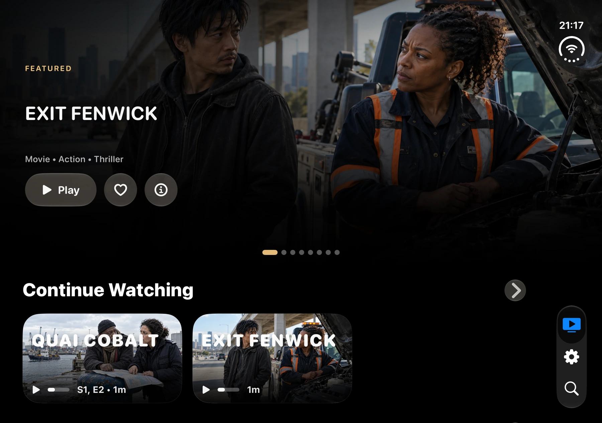
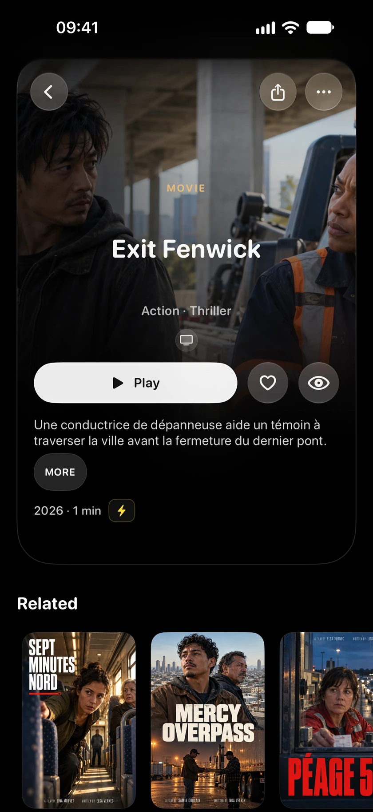
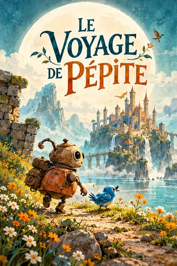
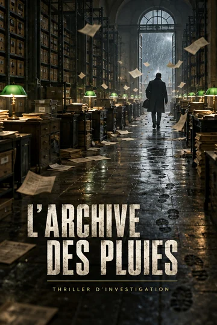
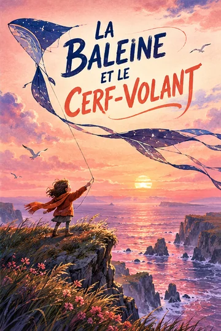
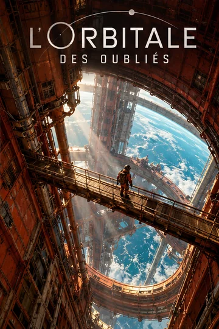
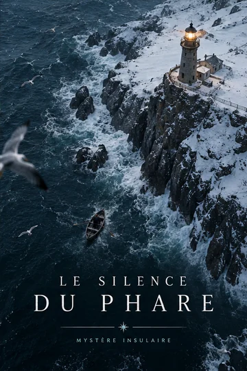

Plus d’espace pour explorer.
L’écran intérieur ouvert laisse respirer les visuels et les rangées de votre médiathèque.
L’expérience Jellyfin native, optimisée pour iPhone Duo.
Votre médiathèque sur iPhone, iPad et Apple TV.
iPhone · iPhone Duo · iPad · Apple TV
Découvrir l’expérience iPhone Duo

Bibliothèque de démonstration · Affiches fictives · Films et séries non inclus
Plus d’écran. Plus de cinéma.
Une interface qui trouve sa place, ouvert comme fermé.


Écran intérieur ouvert et écran extérieur compact · Bibliothèque de démonstration · Contenus non inclus
L’écran intérieur ouvert laisse respirer les visuels et les rangées de votre médiathèque.
Navigation et retour restent accessibles, dans une interface qui respecte l’espace utile de l’écran.
De l’écran extérieur compact au grand écran intérieur, votre médiathèque reste au premier plan.
Un épisode de plus ou un nouveau coup de cœur. Tout ce que vous aimez regarder, à portée de main.
Votre reprise de lecture, synchronisée avec Jellyfin. Reprenez le film ou l’épisode que vous aviez laissé.

Films, séries, collections. Retrouvez vos favoris et votre prochaine envie de cinéma.
Téléchargez les films et séries compatibles sur iPhone et iPad. Votre médiathèque voyage avec vous.





Bibliothèque de démonstration · Affiches fictives · Films et séries non inclus
Votre médiathèque prend ses aises.
La télécommande aussi.

Un focus visible, de grandes images et une expérience native pensée pour le canapé.
Choisissez parmi les pistes disponibles pour votre film ou votre épisode, pendant la lecture.
Lisez le fichier original lorsque le média et l’appareil le permettent. Jellyfin prend le relais si nécessaire.
iOS / iPadOS 26+
tvOS 26+
En préparation
Oui. ReelFin se connecte à votre propre serveur Jellyfin ou à un serveur que vous êtes autorisé à utiliser. Saisissez son adresse puis connectez-vous à votre compte Jellyfin.
Non. Vous apportez votre médiathèque. Les captures et les affiches présentées ici utilisent une collection de démonstration fictive ; aucun film ni aucune série ne sont fournis avec l’app.
Direct Play dépend du fichier, des codecs, des sous-titres et de l’appareil. ReelFin utilise la lecture native Apple ; Jellyfin peut remuxer ou transcoder les fichiers qui en ont besoin.
Sur iPhone et iPad, vous pouvez télécharger des titres compatibles si votre compte Jellyfin autorise les téléchargements. La compatibilité et l’espace disponible restent nécessaires. Les téléchargements ne sont pas disponibles sur Apple TV.
Votre jeton de session est conservé dans le trousseau Apple. ReelFin ne vend pas vos données et ne fait pas de suivi entre les apps. Des diagnostics de plantage facultatifs peuvent être activés dans une version de production. Lire la politique de confidentialité (en anglais).
Une expérience dédiée au Mac est en préparation. Elle n’est pas encore disponible au téléchargement public. ReelFin est actuellement disponible sur iPhone, iPad et Apple TV.
Sur l’App Store. Connectez votre propre serveur Jellyfin.